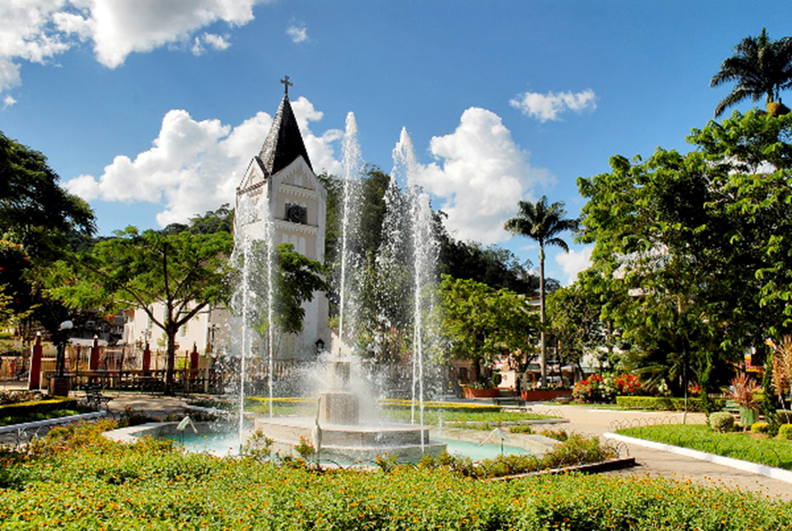

Pedra Azul
26 de maio de 2025
Pedra do Lagarto (Pedra Azul) vista noturna - Credito: Wikipedia
No município de Domingos Martins, no estado do Espírito Santo, região sudeste,se encontra a Reserva Florestal de Pedra Azul, que foi criada pelo decreto 312, de 31 de outubro de 1960. A lei 4.503, de 2 de janeiro de 1991, transformou a reserva em Parque Estadual de Pedra Azul.
A unidade de conservação abriga algumas das maiores elevações do município: a Pedra das Flores (1909 m), a Pedra do Tamanco (1850 m), o Pico Pedra Azul (1822 m), a Pedra das Bromélias (1800 m) e a Pedra de Santo Antonio (1400 m).
Seu Turismo gira em torno de explorações de suas elevações junto a trilhas encontradas pela rota do lagarto e a escalada da pedra do Lagarto.
Domingos Martins “Sede” (Campinho)
26 de maio de 2025

Chafariz e Igreja luterana na praça Praça Dr. Arthur Gerhardt - Credito: https://condominioespelhodagua.com.br/?secao=noticias&id=37
Domingos Martins é um município brasileiro no estado do Espírito Santo, Região Sudeste do país. Localiza-se na região sudoeste serrana do estado, a 42 km da capital capixaba, Vitória. Ocupa uma área de 1 229,210 km², sendo que 3 km² estão em perímetro urbano, e sua população foi estimada em 34 120 habitantes em 2021.
O território do atual município era cortado por uma estrada ligando Minas Gerais a Vitória, aberta a pedido do príncipe regente João VI de Portugal em 1816. Mas foi a chegada dos imigrantes, sobretudo italianos, alemães e pomeranos, que intensificou o crescimento populacional e econômico entre os séculos XIX e XX. A influência cultural
deixada pelos imigrantes europeus ainda é visível em algumas comunidades, sendo expressa em hábitos e costumes diversos pelos descendentes.
Sua Sede é a cidade de Campinho onde são comemoradas as duas festividades mais tradicionais do município, que são a SommerFest(que ocorre sempre em julho) e o Aniversario da cidade(que é comemorado sempre em junho) onde ocorre um tradicional desfile mostrando um pouco da historia do município e da cidade.
A cidade de campinho foi eleita como a cidade mais romântica do Espirito Santo por conta de seu clima extremamente frio oque torna ela uma cidade atrativa para casais que querem passar um tempo juntos.
Santa Teresa
26 de maio de 2025
Praça central - Credito: Divulgação/ Câmara Municipal de Santa Teresa
Santa Teresa é um município localizado na região serrana do Espírito Santo, sede do Instituto Nacional da Mata Atlântica (INMA) e reconhecida pelo governo federal como pioneira na imigração italiana no Brasil. É a capital estadual da gastronomia italiana, jazz e blues.
O município possui vários fragmentos remanescentes de Mata Atlântica, com diversas áreas de conservação, incluindo o Museu de Biologia Professor Mello Leitão, fundado pelo cientista e conservacionista Augusto Ruschi, onde são produzidas diversas atividades de ensino e pesquisa. Os colibris são o símbolo do local.
Praça central - Crédito: Divulgação/ Instituto Nacional da Mata Atlântica (INMA)
46% dos teresenses viviam no campo em 2010, a maioria agricultores familiares, mas a maior parte do Produto Interno Bruto está no setor de serviços. As maiores áreas plantadas são de café, mas o eucalipto tem extensa cadeia produtiva e o município tem a maior produção vitivinícola do Estado. Os serviços incluem instituições de
ensino superior, um hospital com atendimento a outros sete municípios e um setor de turismo em expansão. Seus atrativos são as florestas, montanhas, vales, cachoeiras, arquitetura histórica (como a Casa Lambert), culinária (especialmente na Rua do Lazer) e eventos (como a Festa do Imigrante Italiano). Em partes rurais das terras altas, como no Circuito Caravaggio, há procura por chácaras, condomínios e outros estabelecimentos.
Circuito Caravaggio - Crédito: Divulgação/ Governo ES